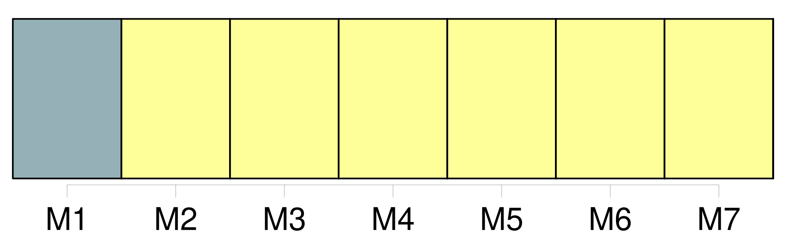
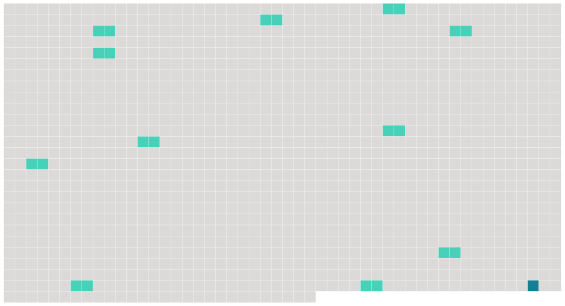

Longueur nb maillons : 12 mentions |
  |
Section 7 : Des gardes particuliers
Lorsque [le commettant] retire la commission d'un garde particulier qu'il emploie, il en informe sans délai le préfet qui met fin à l'agrément.
Paragraphe 2 : Agrément et assermentation
Cette demande comprend : [9 phrases]
L'arrêté d'agrément indique la nature des infractions que le garde particulier est chargé de constater, dans les limites des droits dont dispose [le commettant] et en application des dispositions législatives qui l'y autorisent. [1 phrases]
[Le commettant] délivre au garde particulier une carte d'agrément qui comporte les mentions prévues par arrêté conjoint du ministre de l'intérieur et des ministres intéressés. [3 phrases] En cas de rejet de la demande de renouvellement, [le commettant] et le garde particulier doivent, préalablement à la décision, avoir été mis à même de présenter, devant le préfet ou le fonctionnaire que celui -ci délègue à cet effet, leurs observations écrites ou, sur leur demande, des observations orales. [11 phrases] [Le commettant] et le garde particulier doivent, préalablement à la décision, avoir été mis à même de présenter, devant le préfet ou le fonctionnaire que celui -ci délègue à cet effet, leurs observations écrites ou, sur leur demande, des observations orales. [3 phrases]
Le préfet informe [le commettant] et le président du tribunal d'instance auprès duquel le garde a prêté serment de la suspension ou du retrait de l'agrément. [Le commettant] est tenu d'informer sans délai le préfet lorsque le garde particulier qu' [il] emploie cesse de remplir une ou plusieurs des conditions prévues à l'article 29-1 ou lorsque celui -ci ne respecte pas les dispositions de l'article R. 15-33-29-1. |
 |
La ressource peut être téléchargée sur la page Ortolang
Si vous avez des questions ou vous voyez des erreurs, merci d'envoyer un mail à silvia.federzoni89@gmail.com
Site développé par S. Federzoni (contact)